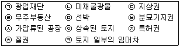
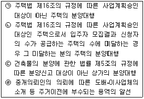
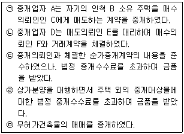
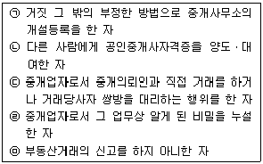
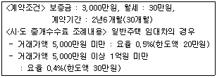
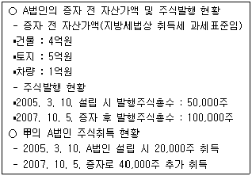
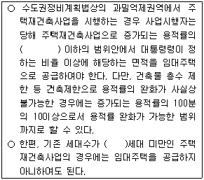
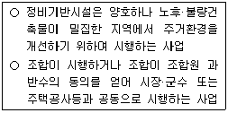
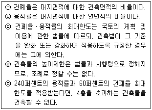

공인중개사-2차 (2007-10-28 기출문제)
1과목: 임의구분
1. 공인중개사법령에 관한 내용 중 옳은 것은?
- 중개업이란 중개대상물에 대한 권리의 득실변경에 관한 행위를 알선하는 것을 말한다.
- 중개보조원이란 중개업자에 소속되어 중개대상물에 대한 현장안내 및 계약서 작성 등 중개업자의 중개업무와 관련된 단순한 업무를 보조하는 자를 말한다.
- 우연한 기회에 단 1회 건물전세계약의 중개를 하고 수수료를 받은 행위는 알선ㆍ중개를 업으로 하는 중개업에 해당한다.
- 중개사무소 개설등록을 하지 아니한 자가 다른 사람의 의뢰에 의하여 일정한 보수를 받고 중개를 업으로 하는 것은 중개업이라고 볼 수 없다.
- 미성년자는 공인중개사법에 의하여 공인중개사 자격을 취득할 수 있다.
(정답률: 59%)

2. 공인중개사법령상 중개대상물과 중개대상 권리에 해당되는 것은 모두 몇 개인가?

- 3개
- 4개
- 5개
- 6개
- 7개
(정답률: 50%)
3. 공인중개사에 관한 설명 중 옳은 것은?
- 공인중개사시험위원회는 건설교통부에 둔다.
- 자격증을 교부한 시ㆍ도지사와 사무소의 소재지를 관할하는 시ㆍ도지사가 서로 다른 경우, 자격취소처분은 사무소 소재지 관할 시ㆍ도지사가 행한다.
- 금치산자 또는 한정치산자는 공인중개사가 될 수 없다.
- 미국 국적을 가진 자는 공인중개사 시험에 응시할 수 없다.
- 2004년 11월 14일 시행한 공인중개사 시험에서 부정행위를 한 응시자는 2007년 11월 13일까지 시험응시자격이 정지된다.
(정답률: 36%)
4. 공인중개사법령상 중개사무소 개설등록의 결격사유에 해당되는 자는?
- 공인중개사자격을 취득하고 10년이 경과된 자
- 업무정지처분을 받고 폐업신고를 한 자로서 업무정지기간이 경과되지 아니한 자
- 파산선고를 받고 복권된 후 1년이 경과된 자
- 금고 이상의 형의 선고유예기간 중에 있는 자
- 도로교통법을 위반하여 벌금형의 선고를 받고 3년이 경과되지 아니한 자
(정답률: 69%)
5. A군(郡)에 중개사무소를 두고 있는 공인중개사 甲과 중개법인 乙, 乙법인 분사무소의 책임자 丙 및 소속공인중개사 丁에 관한 설명 중 옳은 것은?
- 甲은 B군에 분사무소를 둘 수 있다.
- 甲이 B군에 임시중개시설물을 설치한 경우 등록이 취소될 수 있으며, 3년 이하의 징역 또는 2천만원 이하의 벌금에 처하게 된다.
- 乙이 B군에 분사무소를 두고자 할 때는 B군 군수에게 丙의 자격증사본 등의 관련서류를 제출하여야 한다.
- 乙은 B군, C군, D군에 각 분사무소 1개소를 설치할 수 있다.
- 丙과 丁은 업무개시전에 연수교육을 받아야 한다.
(정답률: 70%)
6. 중개업자 등의 거래계약서 작성에 관한 설명 중 틀린 것은?
- 부동산 매매에 관한 거래계약서에는 권리이전의 내용을 반드시 기재하여야 한다.
- 중개업자는 중개가 완성되어 거래계약서가 작성된 경우에는 그 사본을 5년 동안 보존하여야 한다.
- 공인중개사 甲은 소속공인중개사로서 중개업무를 수행하면서 거래계약서에 거래금액을 거짓으로 기재하여 당해 도지사로부터 과태료처분을 받았다.
- 법인인 중개업자의 분사무소에서 거래계약서를 작성하는 경우에는 분사무소의 등록인장을 날인하여야 한다.
- 중개업자는 서로 다른 2 이상의 거래계약서를 작성하여서는 아니된다.
(정답률: 47%)
7. 법인의 중개사무소 개설등록 요건 중 옳은 것은?
- 중개사무소 확보계획을 수립할 것
- 상법상 회사로서 자본금이 5천만원 이상일 것
- 임원 또는 사원 전원이 연수교육을 받았을 것
- 중개업과 감정평가업을 영위할 목적으로 설립된 법인일 것
- 임원 또는 사원의 3분의 1 이상이 공인중개사일 것
(정답률: 64%)
8. 중개사무소의 명칭에 관한 내용 중 틀린 것은?
- 중개업자 A는 사무소의 명칭을 행복부동산중개라고 하였다.
- 시ㆍ도지사는 사무소의 명칭을 잘못 사용한 중개업자 B의 사무소 간판에 대하여 철거를 명하였다.
- 공인중개사인 중개업자 C는 사무소의 명칭을 행운공인중개사사무소라고 하였다.
- 분사무소설치 신고필증을 받은 중개법인의 분사무소 책임자 D는 자기의 성명을 옥외광고물에 표시하였다.
- 중개업자가 아닌 자는 부동산중개와 유사한 사무소의 명칭을 사용하여 100만원의 벌금에 처해졌다.
(정답률: 50%)
9. 중개사무소 이전신고에 관한 내용 중 틀린 것은?
- 甲군(郡)에 사무소를 둔 중개업자 A는 2007년 1월 10일 乙군으로 사무소를 이전하고 같은 해 1월 18일에 乙군 군수에게 이전사실을 신고하였다.
- 중개법인 B의 분사무소 책임자 C는 분사무소를 이전하고, 그 분사무소를 관할하는 등록관청에 이전신고를 하였다.
- 중개업자 D는 중개사무소를 丙군에서 丁군으로 이전한 후 법정기간내에 이전신고를 하지 않아 과태료 처분을 받았다.
- 중개업자 E는 중개사무소를 이전하고 공인중개사법령에 따라 등록관청에 신고하면서 중개사무소의 법적 요건을 갖춘 건물의 임대차계약서도 같이 제출하였다.
- 중개업자 F는 중개업자 G가 사용중인 중개사무소로 이전하고 G의 승낙서와 필요한 서류를 첨부하여 공인중개사법령에 따라 중개사무소 이전신고를 하였다.
(정답률: 59%)
10. 공인중개사법령상 휴업 등의 신고에 관한 내용 중 틀린 것은?
- 중개업자 A는 2월을 휴업하면서 등록관청에 이 사실을 신고하지 않아 과태료 처분을 받았다.
- 중개업자 B는 징집에 의한 입영으로 7월의 휴업을 등록관청에 신고하고, 그 후 6월의 휴업기간 변경신고를 하였다.
- 중개업자 C는 질병에 의한 요양으로 10월의 휴업을 등록관청에 신고하였다.
- 중개업자 D는 폐업신고를 하지 않아 20만원의 과태료에 처해졌다.
- 중개업자 E는 휴업기간의 변경신고를 등록관청에 전자문서로 하였다.
(정답률: 58%)
11. 부동산 중개계약에 관한 내용 중 틀린 것은?
- 중개업자 A는 매도의뢰인 B와 5개월간의 전속중개계약을 체결하였고, B의 요청에 의하여 중개대상물에 대한 정보를 비공개로 하기로 하였다.
- 중개업자 C는 중개의뢰인 D와 일반중개계약서를 작성하였고, 그 계약서에 거래예정가격에 대한 중개수수료를 기재하였다.
- 등록관청은 건설교통부령에서 정하고 있는 전속중개계약서에 의하지 아니하고 전속중개계약을 체결하였다는 이유로 중개업자 E에게 3월의 업무정지를 명하였다.
- 중개업자가 전속중개계약을 체결한 때에는 당해 계약서를 3년 동안 보존하여야 한다.
- 중개업자가 임대차를 위한 전속중개계약을 체결할 때 중개대상물의 거래예정금액 및 공시지가는 필수적 정보공개 대상에 해당된다.
(정답률: 75%)
12. 부동산거래정보망 등에 대한 설명 중 틀린 것은?
- 부동산거래정보망을 설치ㆍ운영할 자의 지정권자는 건설교통부장관이다.
- 전속중개계약을 체결한 중개업자와 일반중개계약을 체결한 중개업자는 거래정보사업자인 공인중개사협회의 부동산거래정보망에 가입하면 차별 없이 이용할 수 있다.
- 공인중개사 2인 이상의 확보는 거래정보사업자의 지정을 받기 위한 요건 중 하나이다.
- 중개업자는 중개대상물의 거래가 완성된 때에는 지체없이 이를 당해 거래정보사업자에게 통보하여야 한다.
- 법인인 거래정보사업자의 해산으로 거래정보망 운영이 불가능한 경우 관할관청은 그 사업자지정을 취소하기 위하여 청문을 실시하여야 한다.
(정답률: 50%)
13. 중개대상물의 확인ㆍ설명 사항이 아닌 것은?
- 임차권 등 중개대상물의 권리관계에 관한 사항
- 벽면 및 도배의 상태
- 일조ㆍ소음ㆍ진동 등 환경조건
- 도로 및 대중교통수단과의 연계성
- 권리를 이전함에 따라 부담하여야 할 조세의 종류 및 세율
(정답률: 42%)
14. 법인인 중개업자의 업무범위에 속하는 것은 모두 몇 개인가?

- 없음
- 1개
- 2개
- 3개
- 4개
(정답률: 31%)
15. 부동산거래의 신고대상 등에 관한 설명 중 틀린 것은?
- 부동산거래의 신고대상은 공인중개사법에서 규정하고 있는 부동산 또는 부동산을 취득할 수 있는 권리에 한정된다.
- 도시 및 주거환경정비법에 따른 관리처분계획의 인가로 인하여 취득한 입주자로 선정된 지위에 관한 매매계약을 체결한 때에는 부동산거래의 신고를 하여야 한다.
- 주택법 또는 택지개발촉진법에 따라 조성한 택지를 공급받을 수 있는 권리에 관한 매매계약을 체결한 때에는 부동산거래의 신고를 하여야 한다.
- 주택법에 따른 주택거래신고의 대상인 주택에 대한 거래계약의 경우에는 별도로 부동산거래의 신고를 하지 않아도 된다.
- 토지거래허가구역 내에서 국토의 계획 및 이용에 관한 법률에 따라 토지거래허가를 받더라도 부동산거래의 신고를 하여야 한다.
(정답률: 32%)
16. 공인중개사법령상 부동산거래의 신고절차 등에 관한 설명 중 틀린 것은?
- 중개업자가 거래계약서를 작성ㆍ교부한 경우 거래당사자는 부동산거래의 신고의무가 없다.
- 부동산거래의 신고는 전자문서로 된 신고서에 의하여 할 수 있다.
- 부동산거래의 신고는 거래계약의 체결일부터 60일 이내에 매매대상 부동산 소재지의 관할 시장ㆍ군수 또는 구청장에게 하여야 한다.
- 거래당사자 또는 중개업자는 부동산거래계약에 관하여 신고한 내용 중 잔금지급일이 변경되거나 거래금액이 잘못 기재된 경우 정정신청을 할 수 있다.
- 부동산거래계약신고서에는 계약일, 실제 거래가격 및 중도금ㆍ잔금 지급일을 기재하여야 한다.
(정답률: 59%)
17. 법인인 중개업자 甲이 서울에 본사를 두고, 다른 지역에 분사무소 A 및 B를 둔 경우 손해배상책임을 보장하기 위하여 설정하여야 하는 최저 보증금액은?
- 3천만원
- 5천만원
- 1억원
- 2억원
- 3억원
(정답률: 43%)
18. 공인중개사법령상 계약금 등의 반환채무 이행의 보장에 관한 설명 중 틀린 것은?
- 중개업자는 매수인이 요구하는 때에는 계약금 등을 금융기관, 공제사업자 등에 예치하여야 한다.
- 이 제도는 계약이행기간 동안의 거래안전을 보장하기 위한 것이다.
- 금융기관은 거래대금의 예치명의자가 될 수 있다.
- 중개업자는 거래대금을 자기 명의로 금융기관 등에 예치하는 경우에는 자기 소유의 예치금과 분리하여 관리하여야 한다.
- 계약금ㆍ중도금 또는 잔금 및 계약관련 서류 관리업무를 수행하는 전문회사는 거래대금의 예치명의자가 될 수 있다.
(정답률: 36%)
19. 부동산 중개수수료 등에 관한 설명 중 틀린 것은?
- 주택의 중개에 대한 중개수수료는 건설교통부령이 정하는 범위 안에서 특별시ㆍ광역시 또는 도의 조례로 정한다.
- 주택 외의 중개대상물에 대한 중개수수료는 중개의뢰인 쌍방으로부터 각각 받되, 그 쌍방으로부터 합산하여 받을 수 있는 중개수수료의 한도는 거래금액의 1천분의 9 이내이다.
- 건축물 중 주택의 면적이 2분의 1 이상인 경우에는 주택의 중개에 대한 중개수수료의 요율을 적용한다.
- 중개업자는 권리관계 확인에 소요되는 실비를 권리를 이전하고자 하는 중개의뢰인에게 청구할 수 있다.
- 교환계약의 경우 교환대상 중개대상물 중 거래금액이 큰 중개대상물의 가액을 중개수수료 산정기준이 되는 거래금액으로 한다.
(정답률: 43%)
20. 중개업자의 금지행위에 해당되는 것은 모두 몇 개인가? (다툼이 있으면 판례에 의함)

- 1개
- 2개
- 3개
- 4개
- 5개
(정답률: 28%)
21. 실무교육을 의무적으로 받아야 하는 자가 아닌 것은?
- 공인중개사인 중개업자의 소속공인중개사
- 중개사무소 개설등록을 신청하고자 하는 법인의 사원
- 중개업자인 법인의 분사무소 책임자
- 폐업신고후 1년이 지난 뒤 중개사무소의 개설등록을 신청하고자 하는 자
- 중개사무소 개설등록을 신청하고자 하는 법인의 임원
(정답률: 50%)
22. 공인중개사법령상 지도ㆍ감독 등에 관한 설명 중 옳은 것은?
- 공인중개사가 공인중개사법을 위반하여 징역형의 선고를 받은 경우 그 자격이 취소되고, 취소된 후 3년이 경과되지 아니한 자는 공인중개사가 될 수 없다.
- 공인중개사법을 위반하여 벌금형의 선고를 받아 중개사무소의 개설등록이 취소된 자는 등록취소를 받은 날부터 3년이 경과되지 아니하면 등록의 결격사유에 해당한다.
- 중개업자가 중개사무소 개설등록 결격사유에 해당하여 등록이 취소된 경우에는 3년 동안 중개업에 종사할 수 없다.
- 등록관청이 등록취소처분을 하는 경우 그에 해당하는 사유가 발생한 날부터 3년이 경과한 때에는 등록취소처분을 할 수 없다.
- 폐업신고 전의 중개업자에 대하여 위반행위를 사유로 행한 행정처분의 효과는 폐업일부터 1년간 재등록 중개업자에게 승계된다.
(정답률: 34%)
23. 공인중개사법령상 1년 이하의 징역 또는 1천만원 이하의 벌금에 처해지는 자에 해당되는 것은 모두 몇 개인가?

- 1개
- 2개
- 3개
- 4개
- 5개
(정답률: 50%)
24. 공인중개사법령상 포상금에 관한 설명 중 옳은 것은?
- 등록관청은 중개의뢰인과 직접 거래한 위법 중개업자를 등록관청이나 수사기관에 신고 또는 고발한 자에 대하여 포상금을 지급할 수 있다.
- 등록관청은 포상대상에 해당하는 자가 행정기관에 의하여 발각되기 전에 등록관청이나 수사기관에 신고 또는 고발한 자 모두에게 포상금을 지급한다.
- 포상금의 지급에 소요되는 비용은 전액 국고에서 보조될 수 있다.
- 등록관청은 포상금의 지급을 결정하고 그 결정일부터 2월 이내에 포상금을 지급하여야 한다.
- 등록관청은 하나의 사건에 대하여 2건 이상의 신고 또는 고발이 접수된 경우에는 최초로 신고 또는 고발한 자에게 포상금을 지급한다.
(정답률: 50%)
25. 공인중개사협회에 관한 설명 중 옳은 것은?
- 협회는 중개업자가 작성하는 거래계약서의 표준이 되는 서식을 정하여 그 사용을 권장하여야 한다.
- 협회는 회원 200인 이상이 발기인이 되어 정관을 작성하여 창립총회의 의결을 거친 후 건설교통부장관의 허가를 받아 설립등기를 함으로써 성립한다.
- 협회는 공제사업운영실적을 매 회계연도 종료 후 3월 이내에 일간신문 또는 협회보에 공시하여야 한다.
- 금융감독원장은 협회가 공제사업의 건전성을 해할 우려가 있다고 인정되는 경우에는 시정을 명할 수 있다.
- 협회는 공제의 책임준비금을 다른 용도로 사용하고자 하는 경우 건설교통부장관의 승인을 얻어야 한다.
(정답률: 60%)
26. 공인중개사법령상 벌칙 등에 관한 설명 중 옳은 것은?(관련 규정 개정전 문제로 여기서는 기존 정답인 1번을 누르면 정답 처리됩니다. 자세한 내용은 해설을 참고하세요.)
- 중개업자가 중개대상물의 매매를 업으로 하는 행위를 한 경우에는 임의적 등록취소 사유에 해당하며, 1년 이하의 징역 또는 1천만원 이하의 벌금에 처한다.
- 중개사무소를 2개 이상 둔 중개업자와 임시중개시설물을 설치한 중개업자의 벌칙내용은 다르다.
- 부정한 방법으로 공인중개사의 자격을 취득한 경우에는 자격취소사유에 해당하며, 동시에 3년 이하의 징역 또는 2천만원 이하의 벌금에 처한다.
- 중개업자가 폐업한 후에 그 업무상 알게 된 비밀을 누설한 경우에는 벌하지 않는다.
- 과태료처분에 불복이 있는 자는 그 처분의 고지를 받은 날부터 30일 이내에 관할법원에 이의를 제기할 수 있다.
(정답률: 50%)
27. 공인중개사법령과 관련된 판례의 내용 중 옳은 것은?
- 무등록 중개업자의 중개행위가 부동산 컨설팅행위에 부수하여 이루어진 경우는 중개업에 해당되지 않는다.
- 중개업자가 중개의뢰인으로부터 수수료 명목으로 법정 한도를 초과하는 당좌수표를 교부받았으나 그 후에 부도처리된 경우는 중개업자의 금지행위에 해당되지 않는다.
- 중간생략등기의 방법으로 단기전매하여 각종 세금을 포탈하려는 것을 알고도 이에 동조하여 그 전매를 중개한 경우, 결과적으로 전매차익을 올리지 못하였더라도 부동산투기를 조장하는 행위에 해당된다.
- 중개보조원이 고의 또는 과실로 거래당사자에게 손해를 입힌 경우는 그 중개보조원을 고용한 중개업자만이 손해배상책임을 진다.
- 공인중개사가 실질적으로 무자격자로 하여금 자기 명의로 공인중개사 업무를 수행하도록 하였더라도 스스로 몇 건의 중개업무를 직접 수행한 경우는 자격증 대여행위에 해당되지 않는다.
(정답률: 60%)
28. 공인중개사법령상 자격정지처분과 업무정지처분에 관한 설명 중 틀린 것은?
- 자격정지처분은 자격증을 교부한 시ㆍ도지사가 하고, 업무정지처분은 등록관청이 한다.
- 자격정지처분의 대상은 소속공인중개사이나, 업무정지처분의 대상은 중개업자이다.
- 자격정지기간 또는 업무정지기간 중에 있는 자는 중개업무를 할 수 없다.
- 업무정지처분은 법에 정한 기간이 경과한 때에는 이를 할 수 없으나, 자격정지처분은 그에 관한 규정이 없다.
- 이중소속에 해당되는 경우 공인중개사는 자격정지 사유에 해당되고, 중개업자는 업무정지 사유에 해당된다.
(정답률: 36%)
29. 중개업자가 대한민국 영토 안의 토지를 취득하고자 하는 외국인에게 설명한 내용 중 옳은 것은?
- 경매로 토지를 취득한 경우 취득일부터 6월 이내에 시장ㆍ군수 또는 구청장에게 신고하여야 한다.
- 대한민국 안의 토지를 취득하는 계약을 체결한 경우에는 계약체결일부터 90일 이내에 신고하여야 한다.
- 문화재보호법에 의한 지정문화재 보호구역내 토지는 취득할 수 없다.
- 군사시설보호구역내 토지의 경우에는 취득일부터 30일 이내에 신고하여야 한다.
- 토지취득허가 의무에 위반하여 체결한 토지취득계약이라도 그 효력은 발생한다.
(정답률: 55%)
30. 중개업자가 부동산경매에서의 권리관계에 관하여 설명한 내용 중 틀린 것은?
- 매각부동산 위의 모든 저당권은 매각으로 소멸된다.
- 담보가등기권리는 그 부동산의 매각에 의하여 소멸된다.
- 전세권은 압류채권, 가압류채권에 대항할 수 없는 경우에는 매각으로 소멸된다.
- 압류채권자에 우선하는 권리는 저당권 등 매각으로 소멸하는 권리에 대항하지 못하더라도 매각으로 소멸되지 않는다.
- 유치권자는 매수인에 대하여 그 피담보채권의 변제가 있을 때까지 유치목적물인 부동산의 인도를 거절할 수 있을 뿐이고 그 피담보채권의 변제를 청구할 수는 없다.
(정답률: 37%)
31. 중개업자가 부동산경매에 관하여 설명한 내용 중 옳은 것은?
- 배당요구를 하여야 배당받을 수 있는 권리자는 경매개시결정에 따른 압류의 효력이 발생한 때부터 1월 이내에 배당요구신청을 하여야 한다.
- 매수신청의 보증금액은 매수신청가격의 10분의 1로 한다.
- 관청의 증명이나 허가를 필요로 하는 경우 매수신고시에 이를 증명하여야 한다.
- 매각허가결정이 확정되면 법원은 대금지급기한을 정하여 매수인과 차순위매수신고인에게 통지하고, 매수인은 그 기한까지 매각대금을 지급하여야 한다.
- 매수신고가 있은 뒤 경매신청이 취하되더라도 그 경매신청으로 발생된 압류의 효력은 소멸되지 않는다.
(정답률: 62%)
32. 중개업자가 중개한 계약 중 부동산등기특별조치법에 따른 검인을 받아야 하는 것은?
- 지상권설정계약서
- 증여계약서
- 임대차계약서
- 전세권설정계약서
- 저당권설정계약서
(정답률: 50%)
33. 주택임대차 중개에서 중개업자 甲이 임차인 乙에게 받을 수 있는 중개수수료의 최고한도액은?

- 120,000원
- 195,000원
- 200,000원
- 240,000원
- 300,000원
(정답률: 40%)
34. 중개업자가 중개대상물에 대하여 확인ㆍ설명하여야 하는 내용에 관한 조사방법 중 틀린 것은?
- 중개대상물의 종류ㆍ면적ㆍ용도 등 중개대상물에 관한 기본적인 사항은 토지대장등본 및 건축물대장등본 등을 통하여 조사한다.
- 소유권ㆍ저당권 등 권리관계에 관한 사항은 등기부등본을 통하여 조사한다.
- 건폐율 상한 및 용적률 상한은 토지이용계획확인서를 통하여 조사한다.
- 환경조건 중 비선호시설, 입지조건은 현장확인의 방법으로 조사한다.
- 공법상 이용제한 및 거래규제에 관한 사항은 토지이용계획확인서를 통하여 조사한다.
(정답률: 60%)
35. 공인중개사법령상 중개사무소의 개설등록과 공인중개사의 매수신청대리인등록 등에 관한 규칙 및 예규의 매수신청대리인 등록에 관한 설명 중 틀린 것은?
- 공인중개사는 중개사무소 개설등록을 하지 않으면 매수신청대리인으로 등록할 수 없다.
- 중개사무소의 개설등록은 등록관청에 하여야 하고, 매수신청대리인 등록은 관할 지방법원의 장에게 하여야 한다.
- 매수신청대리인 등록을 하고자 하는 자는 등록신청일 전 1년 이내에 법원행정처장이 지정하는 교육기관에서 부동산경매에 관한 실무교육을 받아야 한다.
- 손해배상책임을 보장하기 위한 보증은 중개사무소개설 등록요건 및 매수신청대리인 등록요건이다.
- 중개사무소 개설등록의 결격사유와 매수신청대리인 등록의 결격사유는 서로 다르다.
(정답률: 58%)
36. 중개업자가 묘지가 있는 토지를 매수하려는 중개의뢰인에게 설명한 내용 중 틀린 것은?(다툼이 있으면 판례에 의함)
- 장사 등에 관한 법률의 규정에서 말하는 분묘의 점유면적은 분묘의 기지면적 만을 가리킨다.
- 분묘기지권의 효력이 미치는 범위 내에서 기존의 분묘에 단분(單墳)형태로 합장(合葬)하여 새로운 분묘를 설치하는 것은 허용되지 않는다.
- 분묘기지권이 시효취득된 경우 사망자의 연고자는 종손이 분묘를 관리할 수 있는 때에도 토지소유자에 대하여 분묘기지권을 주장할 수 있다.
- 분묘기지권을 시효취득하는 경우에는 지료에 관한 약정이 없는 이상 지료를 지급할 필요가 없다.
- 분묘가 멸실된 경우 유골이 존재하여 분묘의 원상회복이 가능한 정도의 일시적인 멸실에 불과하다면 분묘기지권은 존속하고 있다.
(정답률: 46%)
37. 주택임대차에 관한 중개업자의 설명 중 틀린 것은?(다툼이 있으면 판례에 의함)
- 임차권등기가 첫 경매개시결정등기 전에 등기된 경우, 임차인이 별도의 배당요구를 하지 않아도 배당받을 채권자에 속한다.
- 일시사용을 위한 임대차임이 명백한 경우에는 주택임대차보호법이 적용되지 않는다.
- 확정일자 없이 대항요건만을 갖춘 임차인은 임차권등기명령에 의해 임차권 등기가 경료되더라도 우선변제권을 취득하지 못한다.
- 주택임대차보호법에 따라 임대차계약이 묵시적으로 갱신된 경우 임차인은 임대차계약의 존속기간이 2년이라고 주장할 수 있다.
- 다가구용 단독주택을 임차하여 대항력을 취득한 후에 그 주택이 다세대주택으로 변경된 사정만으로는 임차인의 대항력이 상실하는 것은 아니다.
(정답률: 50%)
38. 공인중개사법령상 거래계약서의 필요적 기재사항이 아닌 것은?
- 계약일
- 물건의 인도일시
- 거래예정가격
- 거래당사자간 약정내용
- 중개대상물 확인ㆍ설명서 교부일자
(정답률: 60%)
39. 중개업자가 상가건물임대차를 중개하면서 설명한 내용중 틀린 것은?(다툼이 있으면 판례에 의함)
- 상가건물을 임차하고 사업자등록을 마친 사업자가 임차건물의 전대차 등으로 당해 사업을 개시하지 않거나 사실상 폐업한 경우, 상가건물임대차보호법상 적법한 사업자등록이라고 볼 수 없다.
- 사업자등록을 마친 상가건물임차인이 폐업신고를 하였다가 다시 같은 상호 및 등록번호로 사업자등록을 한 경우, 상가건물임대차보호법상의 대항력 및 우선변제권은 그대로 존속한다.
- 보증금의 전부 또는 일부를 월단위의 차임으로 전환하는 경우 산정률은 연 1할 5푼을 초과할 수 없다.
- 상가건물임차인이 3기의 차임액에 달하도록 차임을 연체한 사실이 있는 경우, 임대인은 임차인의 계약갱신요구를 거절할 수 있다.
- 상가건물임차인이 건물에 대한 경매신청등기 전에 대항요건을 갖추었다면 보증금 중 일정액을 다른 담보물권자 보다 우선하여 변제받을 권리가 있다.
(정답률: 64%)
40. 유효한 명의신탁에 관한 중개업자의 설명 중 틀린 것은?(다툼이 있으면 판례에 의함)
- 배우자 명의로 부동산에 관한 물권을 등기한 경우로서 조세포탈, 강제집행의 면탈 또는 법령상 제한의 회피를 목적으로 하지 않는 명의신탁은 유효하다.
- 명의신탁자는 대내적으로 명의수탁자에 대하여 실질적인 소유권을 주장할 수 있다.
- 명의수탁자의 점유는 권원의 객관적 성질상 타주점유에 해당하므로, 명의수탁자 또는 그 상속인은 소유권을 점유시효취득할 수 없다.
- 명의수탁자로부터 신탁재산을 매수한 제3자가 명의수탁자의 배임행위에 적극적으로 가담한 경우, 대외적으로 명의수탁자와 제3자 사이의 매매계약은 유효하다.
- 명의신탁자는 명의신탁계약을 해지하고 명의수탁자에게 신탁재산의 반환을 청구할 수 있다.
(정답률: 54%)
2과목: 임의구분
41. 지적법령에서 규정하고 있는 내용에 관한 설명 중 틀린 것은?
- 지적공부의 관리에 관한 사항
- 토지에 관련된 정보의 지적공부 등록에 관한 사항
- 지적공부에 등록된 정보의 제공에 관한 사항
- 국토계획 및 도시환경의 개선에 관한 사항
- 토지에 관련된 정보의 조사ㆍ측량에 관한 사항
(정답률: 55%)
42. 토지의 이동(異動)에 따른 지번부여 방법에 관한 설명중 틀린 것은?
- 등록전환 대상토지가 여러 필지로 되어 있는 경우 그 지번부여지역의 최종 본번의 다음 순번부터 본번으로 하여 순차적으로 지번을 부여할 수 있다.
- 분할의 경우 분할후의 필지중 주거ㆍ사무실 등의 건축물이 있는 필지에 대하여는 분할전의 지번을 우선하여 부여하여야 한다.
- 신규등록의 경우로서 대상토지가 그 지번부여지역안의 최종 지번의 토지에 인접한 경우 그 지번부여지역의 최종본번의 다음 본번에 부번을 붙여서 부여하여야 한다.
- 합병의 경우 합병전의 필지에 주거ㆍ사무실 등의 건축물이 있는 경우 토지소유자가 건축물이 위치한 지번을 합병후의 지번으로 신청하는 때에는 그 지번을 합병후의 지번으로 부여하여야 한다.
- 축척변경시행지역안의 필지에 지번을 새로이 부여하는 때에는 도시개발사업 등이 완료됨에 따라 지적확정측량을 실시한 지역안에서의 지번부여 방법을 준용한다.
(정답률: 59%)
43. 지적법에서 규정한 용어의 정의로서 ‘토지의 표시’에 해당하는 것은?
- 도곽선의 수치
- 도면번호
- 대장의 장번호
- 토지등급
- 경계 또는 좌표
(정답률: 58%)
44. 지적공부에 관한 설명 중 틀린 것은?
- 소관청은 지적공부의 전부 또는 일부가 멸실ㆍ훼손된 때에는 지체없이 복구하여야 한다.
- 경계점좌표등록부를 비치하는 토지는 지적확정측량 또는 축척변경을 위한 측량을 실시하여 경계점을 좌표로 등록한 지역의 토지로 한다.
- 지적공부를 복구하고자 하는 경우 소유자에 관한 사항은 부동산등기부나 법원의 확정판결에 의하여 복구하여야 한다.
- 행정자치부장관은 지적공부의 등본교부 수수료를 정보통신망을 이용하여 전자화폐ㆍ전자결제 등의 방법으로 납부하게 할 수 있다.
- 시ㆍ도지사는 도면이 훼손ㆍ마모 등으로 그 효용을 다할 수 없을 때에는 행정자치부장관의 승인을 얻어 다시 작성할 수 있다.
(정답률: 50%)
45. 부동산 중개업자 甲이 매도의뢰 대상토지를 매수의뢰인 乙에게 중개하기 위하여 해당 지적도등본의 등록사항을 보고 설명할 수 없는 것은?
- 지번에 관한 사항
- 소유자에 관한 사항
- 지목에 관한 사항
- 경계에 관한 사항
- 토지의 소재에 관한 사항
(정답률: 67%)
46. 지적법령에서 규정하고 있는 면적에 관한 설명 중 틀린 것은?
- 경위의측량방법으로 세부측량을 한 지역의 필지별 면적측정은 전자면적측정기에 의한다.
- 경계점좌표등록부에 등록하는 지역의 토지 면적은 제곱미터 이하 한자리 단위로 결정한다.
- ‘면적’이란 지적공부에 등록된 필지의 수평면상의 넓이를 말한다.
- 신규등록ㆍ등록전환을 하는 때에는 새로이 측량하여 각 필지의 면적을 정한다.
- 토지합병을 하는 경우의 면적결정은 합병전의 각 필지의 면적을 합산하여 그 필지의 면적으로 한다.
(정답률: 64%)
47. 신규등록에 관한 설명 중 틀린 것은?(관련 규정 개정전 문제로 여기서는 기존 정답인 3번을 누르면 정답 처리됩니다. 자세한 내용은 해설을 참고하세요.)
- ‘신규등록’이라 함은 새로이 조성된 토지 및 등록이 누락되어 있는 토지를 지적공부에 등록하는 것을 말한다.
- 신규등록할 토지가 있는 때에는 60일 이내 소관청에 신청하여야 하며, 이를 게을리 한 자는 10만원 이하의 과태료에 처한다.
- 토지소유자의 신청에 의하여 신규등록을 한 경우 소관청은 토지표시에 관한 사항을 지체없이 등기관서에 그 등기를 촉탁하여야 한다.
- 공유수면매립에 의거 신규등록을 신청하는 때에는 신규등록사유를 기재한 신청서에 공유수면매립법에 의한 준공인가필증 사본을 첨부하여 소관청에 제출하여야 한다.
- 신규등록 신청시 첨부해야 하는 서류를 그 소관청이 관리하는 경우에는 소관청의 확인으로써 그 서류의 제출에 갈음할 수 있다.
(정답률: 53%)
48. 지적측량을 하는 자가 지적측량을 위하여 장애물을 제거한 경우 발생한 손실보상에 관한 설명 중 틀린 것은?
- 특정인을 위한 지적측량이 아닌 경우 측량행위자가 속한 소관청 또는 지적측량수행자가 손실을 보상해야 한다.
- 손실보상에 대한 관할 토지수용위원회의 재결에 대하여 이의가 있는 경우 행정자치부장관의 결정에 따른다.
- 손실보상에 관하여 그 손실을 보상하여야 할 자는 그 손실을 입은 자와 협의하여야 한다.
- 손실보상에 관한 협의가 성립되지 않을 경우 관할 토지수용위원회에 재결을 신청할 수 있다.
- 지적측량이 특정인을 위한 것인 경우에는 그로 인한 손실은 그 특정인이 보상하여야 한다.
(정답률: 34%)
49. 지적측량에 관한 설명 중 틀린 것은?
- 지적측량은 토지를 지적공부에 등록하거나 지적공부에 등록된 경계점을 지상에 복원할 목적으로 한다.
- 민간 개발사업자가 각 필지의 경계 또는 좌표와 면적을 정하는 측량이다.
- 측판측량, 경위의측량, 전파기 또는 광파기측량, 사진측량 및 위성측량 등의 방법에 의한다.
- 토지소유자 등 이해관계인은 필요한 경우 지적측량수행자에게 해당 지적측량을 의뢰하여야 한다.
- 지상건축물 등의 현황을 지적도ㆍ임야도에 등록된 경계와 대비하여 표시하는 측량을 ‘지적현황측량’이라고 한다.
(정답률: 55%)
50. 지적정보센터에 관한 설명 중 틀린 것은?
- 행정자치부장관은 지적정보센터에서 관리하고 있는 토지관련자료를 정기적으로 유지ㆍ관리하여야 한다.
- 행정자치부장관은 지적정보센터의 운영을 위해 필요하다고 인정하는 경우 국가기관ㆍ지방자치단체 그 밖의 공공기관의 장에게 토지관련자료의 제출을 요구할 수 있다.
- 지적정보센터 운영을 위하여 행정자치부장관의 자료제출 요청을 받은 기관의 장은 부득이한 사유가 있는 경우를 제외하고는 자료를 제공하여야 한다.
- 지적정보센터의 정보제공 여부는 중앙지적위원회 재적위원 과반수의 출석으로 개의하고 출석위원 과반수의 찬성으로 의결하여야 한다.
- 행정자치부장관은 지적전산자료ㆍ주민등록전산자료ㆍ공시지가전산자료ㆍ지적위성기준점관측자료 등 토지관련자료의 효율적인 관리 및 활용을 위하여 지적정보센터를 설치·운영한다.
(정답률: 42%)
51. 지적위원회에 관한 설명 중 틀린 것은?
- 시ㆍ도에는 중앙지적위원회, 시ㆍ군ㆍ구에는 지방지적위원회를 둔다.
- 지방지적위원회는 지적측량에 대한 적부심사청구사항을 심의ㆍ의결 한다.
- 중앙지적위원회의 위원장 및 부위원장을 제외한 위원의 임기는 2년으로 한다.
- 중앙지적위원회의 간사는 행정자치부의 지적업무담당 공무원 중에서 행정자치부장관이 임명한다.
- 지방지적위원회는 위원장 및 부위원장 각 1인을 포함하여 5인 이상 10인 이내의 위원으로 구성한다.
(정답률: 54%)
52. 지적법상의 벌칙규정 중 틀린 것은?
- 지적측량수행자가 지적측량수수료외 그 업무와 관련된 대가를 받은 경우에는 1년 이하의 징역 또는 500만원 이하의 벌금에 처한다.
- 지적측량수행자가 고의로 지적측량을 잘못한 경우는 2년 이하의 징역 또는 1천만원 이하의 벌금에 처한다.
- 지적편집도간행ㆍ판매업등록증을 다른 사람에게 빌려준 자 및 그 상대방은 2년 이하의 징역 또는 1천만원 이하의 벌금에 처한다.
- 국가기술자격법에 의한 지적기술자격취득자가 아닌 사람이 지적측량을 한 경우는 2년 이하의 징역 또는 1천만원 이하의 벌금에 처한다.
- 등록기준을 갖추어 교부받은 지적측량업등록증을 다른 사람에게 빌려준 자와 그 상대방은 5년 이하의 징역 또는 5천만원 이하의 벌금에 처한다.
(정답률: 31%)
53. 부기등기 형식으로 행하는 등기가 아닌 것은?
- 환매특약의 등기
- 전전세권 설정등기
- 지상권을 목적으로 한 저당권 설정등기
- 소유권에 대한 가처분등기
- 이해관계 있는 제3자의 승낙을 얻은 저당권변경등기
(정답률: 50%)
54. 인터넷을 이용한 등기부 등의 열람에 관한 설명 중 틀린 것은?
- 인터넷에 의한 등기부의 열람 및 등ㆍ초본의 발급에는 신청서의 제출을 요하지 않는다.
- 누구든지 등기부와 부속서류를 인터넷을 통하여 열람할 수 있다.
- 누구든지 타인으로부터 교부받은 등기부 등ㆍ초본의 진위여부를 인터넷을 통하여 확인할 수 있다.
- 누구든지 자신의 등기신청사건에 대하여 그 진행 상태를 인터넷을 통하여 확인할 수 있다.
- 인터넷에 의한 등기부의 열람 및 등ㆍ초본의 발급의 경우 수수료 면제에 관한 규정은 적용되지 아니한다.
(정답률: 44%)
55. 등기부와 대장(臺帳)의 관계에 관한 설명 중 틀린 것은?
- 토지소유권의 이전등기가 완료된 때에는 등기관은 지체없이 지적공부 소관청에 그 뜻을 통지하여야 한다.
- 건물의 구조 변경이 있는 경우 등기부상 소유자는 1개월 내에 등기신청을 하지 않으면 과태료의 처분을 받는다.
- 등기부와 대장상 부동산의 표시가 불일치한 경우 소유자는 등기부를 기초로 대장상 부동산의 표시변경등록을 하지 않으면 그 부동산에 대해 다른 등기를 신청할 수 없다.
- 토지소유권이전등기 신청시에는 토지대장등본 기타 부동산의 표시를 증명하는 서면을 첨부하여야 한다.
- 등기부와 대장상 소유자 표시가 불일치한 경우 등기부상 소유자는 등기부를 기초로 대장상 소유자의 표시변경등록을 하지 않으면 그 부동산에 대해 다른 등기를 신청할 수 없다.
(정답률: 39%)
56. 등기의 유효요건 및 효력에 관한 설명 중 옳은 것은?(다툼이 있으면 판례에 의함)
- 甲의 A부동산에 예고등기가 있으면 甲은 그 부동산을 처분할 수 없다.
- 甲의 물권에 관한 등기가 원인 없이 말소되었다면 등기는 효력발생요건이자 존속요건이므로 그 물권의 효력도 소멸한다.
- 甲의 미등기 부동산을 乙이 매수하여 직접 보존등기를 한 경우 그 등기가 실체관계와 부합하더라도 무효이다.
- 甲의 A부동산을 乙이 매수하여 丙에게 전매한 경우 甲이 동의하지 않더라도 丙은 甲에게 소유권이전등기를 청구할 수 있다.
- 乙의 토지에 甲명의의 소유권이전등기 청구권보전을 위한 가등기가 있더라도 甲은 소유권이전등기를 청구할 정당한 법률관계가 있다고 추정되지 않는다.
(정답률: 73%)
57. 매매를 등기원인으로 소유권이전등기를 할 경우 거래가액의 등기에 관한 설명 중 틀린 것은?
- 2006. 1. 1. 이전에 작성된 매매계약서를 등기원인증서로 한 경우에는 거래가액을 등기하지 않는다.
- 등기원인이 매매라 하더라도 등기원인증서가 판결 등 매매계약서가 아닌 때에는 거래가액을 등기하지 않는다.
- 신고필증상의 부동산이 1개인 경우에는 매도인과 매수인이 각각 복수이더라도 매매목록을 제출할 필요가 없다.
- 당초의 신청에 착오가 있는 경우 등기된 매매목록을 경정 할 수 있다.
- 등기원인증서와 신고필증에 기재된 사항이 서로 달라 동일한 거래라고 인정할 수 없는 등기신청은 각하된다.
(정답률: 40%)
58. 전산정보처리조직에 의한 등기신청(이하 ‘전자신청’이라 한다)에 관한 설명 중 틀린 것은?
- 전자신청을 할 수 있는 등기유형에는 일정한 제한이 있다.
- 전자신청은 대한민국 국적을 가진 자로서 사용자등록을 한 경우에 할 수 있다.
- 전자신청의 경우 접수번호는 전산정보처리조직에 의하여 자동적으로 생성된 접수번호를 부여한다.
- 변호사나 법무사가 아닌 자도 위임이 있으면 다른 사람을 대리하여 전자신청을 할 수 있다.
- 집단사건이나 판단이 어려운 사건은 지연처리사유를 등록하고 이들 신청사건보다 나중에 접수된 사건을 먼저 처리할 수 있다.
(정답률: 55%)
59. 등기신청에 관한 설명 중 틀린 것은?
- 법인 아닌 사단에 속하는 부동산에 관한 등기는 그 사단의 명의로 신청할 수 있다.
- 근저당권설정자가 사망한 경우 근저당권자는 임의경매신청을 하기 위하여 근저당권의 목적인 부동산의 상속등기를 대위신청 할 수 있다.
- 甲, 乙간의 매매 후 등기 전에 매수인 乙이 사망한 경우 乙의 상속인 丙은 甲과 공동으로 丙명의의 소유권이전등기를 신청할 수 있다.
- 甲→乙→丙→丁으로 매매가 이루어졌으나 등기명의인이 甲인 경우 최종매수인 丁은 乙과 丙을 순차로 대위하여 소유권이전등기를 신청할 수 있다.
- 민법상 조합을 등기의무자로 한 근저당권설정등기는 신청할 수 없지만, 채무자로 표시한 근저당권설정등기는 신청할 수 있다.
(정답률: 54%)
60. 등기신청의 취하에 관한 설명 중 틀린 것은?
- 등기신청대리인이 등기신청을 취하하는 경우에는 취하에 대한 특별수권이 있어야 한다.
- 등기관이 등기부에 등기사항을 기입하고 날인하기 전까지는 등기신청의 취하가 가능하다.
- 등기의 공동신청 후 등기권리자 또는 등기의무자는 각각 단독으로 등기신청을 취하할 수 없다.
- 동일한 신청서로 수 개의 부동산에 관한 등기신청을 한 경우 일부 부동산에 대한 등기신청을 취하할 수 없다.
- 전자신청을 취하하려면 전자신청과 동일한 방법으로 사용자인증을 받아야 한다.
(정답률: 64%)
61. 미등기 토지에 대하여 자기 명의로 소유권보존등기를 신청할 수 없는 자는?
- 토지대장상 최초 소유자의 상속인
- 시ㆍ구ㆍ읍ㆍ면장의 서면에 의하여 소유권을 증명하는 자
- 판결에 의하여 자기의 소유권을 증명하는 자
- 수용으로 인하여 소유권을 취득하였음을 증명하는 자
- 미등기토지의 지적공부상 ‘국’(國)으로부터 소유권이전등록을 받은 자
(정답률: 알수없음)
62. 말소등기에 관한 설명 중 틀린 것은?
- 등기가 실체관계와 부합하지 않게 된 경우에 기존등기의 전부를 소멸시킬 목적으로 하는 등기이다.
- 등기관은 등기원인의 무효 또는 취소로 인하여 등기의 말소 또는 회복의 등기를 한 때에는 예고등기를 말소하여야 한다.
- 전세권자가 행방불명이 된 경우 전세권설정자는 전세계약서와 전세금반환증서를 첨부하여 단독으로 전세권의 말소등기를 신청할 수 있다.
- 저당권의 목적이 된 소유권의 말소등기에 있어서는 이해관계인인 저당권자의 동의가 필요하다.
- 농지를 목적으로 하는 전세권설정등기가 실행된 경우 당사자의 신청이 있어야 말소할 수 있다.
(정답률: 알수없음)
63. 가등기에 관련된 설명 중 옳은 것은?
- 가등기에 기한 본등기를 하면 가등기와 본등기 사이에 행하여진 등기로서 본등기와 양립할 수 없는 등기는 직권 말소한다.
- 가등기에 기한 본등기의 실체법상 효력은 가등기 한 날로 소급하여 발생한다.
- 가등기에 기한 소유권이전의 본등기를 한 경우에 가등기 후에 경료된 당해 가등기에 대한 가압류 등기는 직권 말소된다.
- 소유권에 관한 가등기명의인이 가등기말소등기를 신청하는 경우 가등기명의인의 인감증명을 첨부할 필요가 없다.
- 가등기가처분명령에 의한 가등기는 가등기가처분의 명령법원이 이를 촉탁한다.
(정답률: 42%)
64. 집합건물의 등기에 관한 설명 중 틀린 것은?
- 규약상 공용부분은 등기부에 공용부분이라는 취지를 기재하여야 한다.
- 1동 건물을 구분한 건물에 있어서는 1동의 건물에 속하는 전부에 대하여 1용지를 사용한다.
- 구분건물의 요건을 갖춘 1동의 건물 전체를 일반건물로 등기할 수 없다.
- 대지권 등기 후 건물 소유권에 대한 등기를 하였다면, 그 등기는 건물만에 한한다는 취지의 부기가 없는 한 대지권에 대하여도 동일한 효력을 가진다.
- 건물의 등기용지에 대지권의 등기를 한 때에는 그 권리의 목적인 토지의 등기부에 대지권인 취지를 등기하여야 한다.
(정답률: 43%)
65. 지방세로서 보통징수방법만으로 부과ㆍ징수하는 것은?
- 지방교육세
- 양도소득세
- 종합부동산세
- 등록세
- 재산세
(정답률: 50%)
66. 납세의무의 성립시기에 관한 설명 중 틀린 것은?
- 재산세 : 과세기준일
- 취득세 : 취득세 과세물건을 취득하는 때
- 등록세 : 재산권 기타 권리를 등기 또는 등록하는 때
- 재산할 사업소세 : 재산세의 과세기준일
- 종합부동산세 : 재산세의 과세기준일
(정답률: 39%)
67. 소득세법상 1세대 1주택(고가주택에 해당하지 않고 등기된 주택임)을 양도한 경우로서 양도소득세 비과세 대상이 아닌 것은?
- 서울특별시에 소재하는 주택을 5년 동안 보유하고, 보유기간 중 3년 동안 거주한 후 양도한 경우
- 부산광역시에 소재하는 주택을 2년 동안 보유하고 양도한 경우로서, 양도일부터 1년 6개월 전에 세대전원이 해외이주법에 따른 해외이주로 출국한 경우
- 대전광역시에 소재하는 주택을 2년 동안 보유하고 6개월 동안 거주하던 중 양도한 경우로서, 재정경제부령이 정하는 근무상의 형편으로 다른 시로 이사한 경우
- 광주광역시에 소재하는 주택을 1년 동안 보유하고 양도한 경우로서, 양도일부터 6개월 전에 2년 동안 해외거주를 필요로 하는 근무상의 형편으로 세대전원이 출국한 경우
- 임대주택법에 의한 건설임대주택을 1년 전에 취득하여 양도한 경우로서, 당해 건설임대주택의 임차일부터 당해 주택의 양도일까지의 거주기간이 7년인 경우
(정답률: 50%)
68. 소득세법상 양도차익을 계산함에 있어서 양도 또는 취득시기로 틀린 것은?
- 민법상 점유로 인하여 부동산의 소유권을 취득한 경우 : 등기부에 기재된 등기접수일
- 대금을 청산한 날이 분명하지 아니한 경우 : 등기부ㆍ등록부 또는 명부 등에 기재된 등기ㆍ등록접수일 또는 명의개서일
- 대금을 청산하기 전에 소유권이전등기를 한 경우 : 등기부에 기재된 등기접수일
- 장기할부조건의 경우 : 소유권이전등기(등록 및 명의개서 포함) 접수일ㆍ인도일 또는 사용수익일 중 빠른 날
- 상속에 의하여 취득한 부동산의 경우 : 상속개시일
(정답률: 50%)
69. 소득세법상 양도소득금액의 계산에 있어서 장기보유특별공제에 대한 설명 중 틀린 것은?
- 장기보유특별공제는 단계별 초과누진세율제도하에서 장기간 축적된 보유이익이 양도시점에 일시에 실현됨으로 인하여 발생하는 과도한 세부담을 완화하는 효과가 있다.
- 미등기양도자산(법령이 정하는 자산은 제외)에 대하여는 장기보유특별공제의 적용이 배제된다.
- 법령의 규정에 의하여 양도소득세가 중과세되는 비사업용토지에 대하여는 장기보유특별공제의 적용이 배제된다.
- 장기보유특별공제는 양도차익의 45%까지 공제될 수 있다.
- 1세대 1주택에 해당하는 등기된 고가주택을 양도하는 경우에는 장기보유특별공제의 적용이 배제된다.
(정답률: 60%)
70. 소득세법상 국내자산의 양도시 양도소득과세표준을 감소시킬 수 있는 항목에 해당하지 않는 것은?
- 자산의 취득에 소요된 실지거래가액
- 자산을 양도하기 위하여 직접 지출한 비용
- 장기보유특별공제
- 양도소득기본공제
- 예정신고납부세액공제
(정답률: 42%)
71. 소득세법상 먼저 양도하는 주택에 대하여 50%의 세율로 양도소득세가 중과세되는 2주택을 보유한 1세대가 주택을 양도하는 경우에 관련된 설명 중 틀린 것은?(단, 당해 2주택은 등기된 주택임)
- 2주택을 연도를 달리하여 양도하고 다른 양도자산이 없다면, 각각에 대하여 연 250만원의 양도소득기본공제가 적용된다.
- 먼저 양도하는 주택은 장기보유특별공제의 적용이 배제된다.
- 나중에 양도하는 주택은 1세대 1주택 비과세요건을 충족하면 양도소득세가 비과세된다.
- 투기지역으로 지정된 지역에 소재하는 1세대 2주택인 경우, 먼저 양도하는 주택에 대하여는 본래의 세율에 15%를 가감한 범위 내에서 탄력세율이 적용될 수 있다.
- 먼저 양도하는 주택의 양도소득금액을 계산함에 있어서 양도당시의 실지거래가액을 확인할 수 없어 양도가액을 추계결정하는 경우에는 기준시가, 감정가액, 매매사례가액, 등기부기재가액을 순차로 적용하여 산정한 가액을 양도가액으로 한다.
(정답률: 50%)
72. 소득세법상 양도소득에 해당하지 않는 것은?
- 부동산을 취득할 수 있는 권리의 양도로 인하여 발생하는 소득
- 전세권 및 등기된 부동산임차권의 양도로 인하여 발생하는 소득
- 지상권의 양도로 인하여 발생하는 소득
- 행정관청으로부터 인가ㆍ허가ㆍ면허 등을 받음으로써 발생한 영업권의 단독양도로 인하여 발생하는 소득
- 시설물을 배타적으로 이용하거나 일반이용자에 비하여 유리한 조건으로 시설물을 이용할 수 있는 권리가 부여된 주식의 양도로 인하여 발생하는 소득
(정답률: 46%)
73. 지방세법상 등록세가 비과세되는 경우에 해당하지 않는 것은?
- 사립학교법에 의한 학교법인이 법령이 정하는 수익사업에 사용하기 위하여 취득하는 부동산의 등기
- 신탁법에 의한 신탁으로서 신탁등기가 병행된 것으로 위탁자로부터 수탁자에게 이전하는 경우의 재산권 취득의 등기
- 지방자치단체가 자기를 위하여 하는 부동산의 등기
- 공익사업을 위한 토지 등의 취득 및 보상에 관한 법률에 의한 환매권의 행사로 매수하는 부동산의 등기
- 지방자치단체조합에 귀속 또는 기부채납을 조건으로 취득하는 부동산의 등기
(정답률: 53%)
74. 아래의 자료를 기초로 제조업을 영위하고 있는 비상장 A법인의 주주인 甲이 과점주주가 됨으로써 과세되는 취득세(비과세 또는 감면은 고려하지 않음)의 과세표준은 얼마인가?

- 2억원
- 4억원
- 5억 1천만원
- 6억원
- 10억원
(정답률: 50%)
75. 지방세법상 등록세 과세표준을 부동산가액에 의하는 것은?
- 가등기
- 가압류
- 가처분
- 경매신청
- 저당권의 설정
(정답률: 46%)
76. 지방세법상 취득세에 관한 설명 중 틀린 것은?
- 취득세의 표준세율은 2%이며, 취득가액이 50만원 이하인 경우에는 취득세를 부과하지 아니한다.
- 차량ㆍ기계장비ㆍ항공기 및 주문에 의하여 건조하는 선박은 원시취득에 한하여 납세의무가 있다.
- 유상거래를 원인으로 취득하는 주택 중 표준세율이 적용되는 주택에 대한 취득세는 산출세액의 50%를 경감한다.
- 상속으로 인하여 취득세 과세물건을 취득한 자는 상속개시일부터 6월(납세자가 외국에 주소를 둔 경우에는 9월) 이내에 취득세를 신고ㆍ납부하여야 한다.
- 취득세를 신고기한까지 신고하지 아니한 자는 그 신고기한만료일부터 30일이 경과하지 아니한 경우로서 당해 취득세를 보통징수의 방법으로 부과고지 받기 전에는 기한후신고를 할 수 있다.
(정답률: 54%)
77. 지방세법상 재산세 과세대상 토지(비과세 또는 면제대상이 아님) 중 과세표준이 증가함에 따라 재산세 부담이 누진적으로 증가할 수 있는 것은?
- 과세기준일 현재 군지역에서 실제 영농에 사용되고 있는 개인이 소유하는 과수원
- 건축법 등 관계 법령의 규정에 따라 허가를 받아야 할 건축물로서 허가를 받지 아니한 건축물의 부속토지
- 1980. 5. 1.부터 종중이 소유하고 있는 임야
- 회원제 골프장용 토지로서 체육시설의 설치ㆍ이용에 관한 법률의 규정에 의한 등록대상이 되는 토지
- 고급오락장으로 사용되는 건축물의 부속토지
(정답률: 36%)
78. 지방세법상 재산세의 납세지 및 납세의무자에 관한 설명 중 틀린 것은?
- 토지의 납세지는 토지의 소재지를 관할하는 시ㆍ군ㆍ지방자치단체인 구이다.
- 건축물의 납세지는 건축물의 소재지를 관할하는 시ㆍ군ㆍ지방자치단체인 구이다.
- 주택의 납세지는 주택 소유자의 주소지를 관할하는 시ㆍ군ㆍ지방자치단체인 구이다.
- 공부상의 소유자가 매매 등의 사유로 소유권에 변동이 있었음에도 이를 신고하지 않아 사실상의 소유자를 알 수 없는 때에는 공부상의 소유자가 납세의무자가 된다.
- 상속이 개시된 재산으로서 상속등기가 이행되지 아니하고 사실상의 소유자를 신고하지 아니한 때에는 법령이 정하는 주된 상속자가 납세의무자가 된다.
(정답률: 42%)
79. 종합부동산세에 관한 설명 중 틀린 것은?
- 개인의 경우 종합부동산세의 납세지는 소득세법상의 규정을 준용하여 정한다.
- 주택분 과세기준금액을 초과하는 금액에 대하여 당해 과세대상 주택의 주택분 재산세로 부과된 세액은 주택분 종합부동산세액에서 이를 공제한다.
- 지방세법상 별도합산과세대상 토지에 대한 당해년도 종합부동산세의 세부담상한액은 전년도에 부과된 종합부동산세액의 300%로 한다.
- 혼인함으로써 1세대를 구성하는 경우에는 혼인한 날부터 2년 동안은 주택 또는 토지를 소유하는 자와 그 혼인한 자별로 각각 1세대로 본다.
- 종업원(법령에서 정하는 사용자의 친족 기타 특수관계인 또는 법인의 과점주주가 아님)에게 무상이나 저가로 제공하는 사용자 소유의 주택으로서 국민주택규모 이하의 주택은 주택분 종합부동산세 과세표준 합산의 대상이 되는 주택의 범위에 포함되지 아니한다.
(정답률: 42%)
80. 종합부동산세법상 납세의무자에 해당하지 않는 것은?(단, 아래의 개인과 법인은 모두 과세기준일 현재 주택분 또는 토지분의 재산세 납세의무자임)
- 세대원이 소유한 국내에 있는 재산세 과세대상인 주택의 공시가격을 합산한 금액이 7억원을 초과하는 경우에는 주된 주택소유자
- 세대원이 소유한 지방세법상 종합합산과세대상인 국내에 소재하는 당해 과세대상토지의 공시가격을 합한 금액이 4억원을 초과하는 경우에는 주된 토지소유자
- 지방세법상 별도합산과세대상인 국내에 소재하는 당해 과세대상토지의 공시가격을 합한 금액이 250억원을 초과하는 법인
- 모회사인 A법인과 자회사인 B법인이 소유한 국내에 있는 재산세 과세대상인 주택의 공시가격을 합한 금액이 10억원(모회사 6억원, 자회사 4억원)인 경우에는 모회사인 A법인
- 지방세법상 종합합산과세대상인 국내에 소재하는 당해 과세대상토지의 공시가격을 합한 금액이 5억원을 초과하는 법인
(정답률: 42%)
3과목: 임의구분
81. 국토의 계획 및 이용에 관한 법령상 도시관리계획에 관한 설명 중 틀린 것은?
- 주민은 지구단위계획구역의 지정 및 변경에 관한 사항에 대하여 도시관리계획의 입안을 제안할 수 있다.
- 도시관리계획이 도시기본계획과 함께 입안될 수는 없다.
- 시ㆍ도지사가 도시관리계획을 결정하고자 하는 때에는 관계행정기관의 장과 미리 협의하여야 한다.
- 특별시장ㆍ광역시장ㆍ시장 또는 군수는 5년마다 관할구역의 도시관리계획에 대하여 그 타당성 여부를 전반적으로 재검토하여 이를 정비하여야 한다.
- 도시관리계획결정은 그 고시가 있은 날부터 5일후에 그 효력이 발생한다.
(정답률: 50%)
82. 국토의 계획 및 이용에 관한 법령상 시가화조정구역의 지정에 관한 설명 중 틀린 것은?
- 1제곱킬로미터 이상의 시가화조정구역 지정에 대한 도시관리계획의 결정권자는 건설교통부장관이다.
- 시가화조정구역은 도시지역과 그 주변지역의 무질서한 시가화방지와 계획적ㆍ단계적인 개발을 도모하기 위하여 지정한다.
- 시가화유보기간은 5년 이상 20년 이내이다.
- 시가화조정구역의 지정에 관한 도시관리계획의 결정은 시가화유보기간이 만료된 날의 다음날부터 그 효력을 상실한다.
- 시가화조정구역의 지정에 관한 도시관리계획결정의 실효(失效)에 대하여는 별도의 고시를 요하지 않는다.
(정답률: 46%)
83. 국토의 계획 및 이용에 관한 법령상 용도지역 및 용도지구의 세분이 바르게 연결된 것은?(시ㆍ도 도시계획조례로 세분하는 경우는 제외함)
- 전용주거지역 - 제1종전용주거지역, 제2종전용주거지역, 제3종전용주거지역
- 보존지구 - 문화자원보존지구, 중요시설물보존지구, 생태계보존지구
- 고도지구 - 최고고도지구, 최저고도지구, 적정고도지구
- 경관지구 - 시가지경관지구, 역사문화경관지구, 일반경관지구
- 상업지역 - 전용상업지역, 일반상업지역, 준상업지역
(정답률: 알수없음)
84. 국토의 계획 및 이용에 관한 법령상 용도지역안에서 용적률 최대한도의 범위가 다르게 규정되어 있는 것은? (특별시ㆍ광역시ㆍ시 또는 군의 도시계획조례는 별도로 고려하지 아니함)
- 보전관리지역
- 생산관리지역
- 계획관리지역
- 농림지역
- 자연환경보전지역
(정답률: 50%)
85. 국토의 계획 및 이용에 관한 법령상 개발행위허가의 제한에 관한 설명 중 옳은 것은?
- 제한하고자 하는 자가 건설교통부장관인 경우에는 관할 시장ㆍ군수의 의견청취를 요하지 않는다.
- 제한하고자 하는 자가 건설교통부장관인 경우에는 중앙도시계획위원회의 심의를 거치지 아니한다.
- 제한기간을 연장하는 경우 2회에 한하여 3년 이내로 연장이 가능하다.
- 지구단위계획구역으로 지정된 지역은 제한기간의 연장이 가능하다.
- 녹지지역으로 수목이 집단적으로 생육하고 있어 보전할 필요가 있는 지역은 제한기간의 연장이 가능하다.
(정답률: 42%)
86. 국토의 계획 및 이용에 관한 법령상 지구단위계획 및 지구단위계획구역에 관한 설명 중 틀린 것은?
- 지구단위계획은 제1종과 제2종으로 구분된다.
- 지구단위계획은 도시관리계획으로 결정된다.
- 관광진흥법에 따라 지정된 관광특구에 대하여 제1종지구단위계획구역을 지정할 수 있다.
- 계획관리지역에 위치한 산업개발진흥지구에 대하여 제2종지구단위계획구역을 지정할 수 있다.
- 택지개발예정지구의 경우 그 일부에 대하여 제1종지구단위계획구역을 지정할 수는 없다.
(정답률: 50%)
87. 국토의 계획 및 이용에 관한 법령상 관리지역에 관한 설명 중 틀린 것은?
- 관리지역은 도시지역의 인구와 산업을 수용하기 위해 도시지역에 준하여 체계적으로 관리하거나 농림업의 진흥, 자연환경 또는 산림의 보전을 위해 농림지역 또는 자연환경보전지역에 준하여 관리가 필요한 용도지역이다.
- 국토환경보전을 위하여 필요한 경우 보전관리지역은 자연환경보전지역과 중복하여 지정할 수 있다.
- 관리지역안의 취락을 정비하기 위하여 취락지구로 지정할 수 있다.
- 관리지역에서 창고를 건축하는 경우 특별시·광역시·시 또는 군의 조례가 정하는 높이로 규모 등을 제한할 수 있다.
- 관리지역안에서 농지법에 의한 농업진흥지역으로 지정·고시된 지역은 농림지역으로 결정ㆍ고시된 것으로 본다.
(정답률: 58%)
88. 국토의 계획 및 이용에 관한 법령상 도시계획시설부지의 매수청구에 관한 설명 중 옳은 것은?
- 매수청구할 수 있는 토지의 지목은 대(垈)에 한정된다.
- 도시계획시설결정의 고시일부터 10년 이내에 당해 도시계획시설사업이 시행되지 않으면 그 사업의 실시계획인가가 행하여진 경우에도 매수청구할 수 있다.
- 매수의무자는 매수청구가 있은 날부터 3개월 이내에 매수여부를 결정ㆍ통지하여야 한다.
- 매수하기로 결정한 토지는 매수결정을 통지한 날부터 1년 이내에 매수하여야 한다.
- 매수청구를 받은 토지의 매수대금으로 채권을 발행하여 지급할 수 없다.
(정답률: 32%)
89. 국토의 계획 및 이용에 관한 법령에 근거하여 실시하는 조사가 아닌 것은 ?
- 지가동향조사
- 주택담보대출 현황조사
- 토지거래 상황조사
- 광역도시계획의 수립을 위한 기초조사
- 토지적성평가 등 도시관리계획 입안을 위한 기초조사
(정답률: 67%)
90. 국토의 계획 및 이용에 관한 법령상 도시계획시설사업에 관한 설명 중 틀린 것은?
- 도시계획시설사업은 도시계획시설을 설치·정비 또는 개량하는 사업을 말한다.
- 시행자는 도시계획시설사업의 효율적 추진을 위해 필요하다고 인정하는 때에는 사업시행대상지역을 2 이상으로 분할하여 시행할 수 있다.
- 시행자는 도시계획시설사업에 필요한 토지·건축물 또는 그 토지에 정착된 물건을 수용 또는 사용할 수 있다.
- 도시계획시설에 대한 도시관리계획결정의 고시가 있은 때에는 공익사업을 위한 토지 등의 취득 및 보상에 관한 법률에 의한 사업인정 및 그 고시가 있은 것으로 본다.
- 건설교통부장관 또는 시·도지사는 시행자에게 기반시설에 필요한 용지확보 등의 조치를 할 것을 조건으로 실시계획을 인가할 수 있다.
(정답률: 50%)
91. 국토의 계획 및 이용에 관한 법령상 토지거래계약에 관한 허가구역으로 지정된 지역에서 용도지역별로 토지거래계약의 허가를 요하지 아니하는 면적을 바르게 연결한 것은? (건설교통부장관이 당해 기준면적의 3배의 범위안에서 따로 정하여 공고한 경우를 제외함)
- 주거지역 : 200제곱미터 이하
- 상업지역 : 250제곱미터 이하
- 녹지지역 : 100제곱미터 이하
- 도시지역안에서 주거지역ㆍ상업지역ㆍ공업지역 및 녹지지역의 지정이 없는 구역 : 180제곱미터 이하
- 도시지역외의 지역으로서 농지의 경우 : 1천제곱미터 이하
(정답률: 77%)
92. 국토의 계획 및 이용에 관한 법령상 토지거래계약 허가와 관련된 선매제도에 대한 설명 중 옳은 것은?
- 토지거래계약 허가를 받아 취득한 토지가 이용목적대로 이용되고 있는 경우 당해 토지는 선매 협의매수의 대상이 된다.
- 시장ㆍ군수ㆍ구청장은 토지거래계약 허가의 신청이 있는 날부터 2월 이내에 선매자를 지정하여 토지소유자에게 통지하여야 한다.
- 선매자로 지정된 자는 그 지정일부터 15일 이내에 매수가격 등 선매조건을 기재한 서면을 토지소유자에게 통지하여 선매협의를 하여야 한다.
- 선매자가 토지를 매수하는 경우의 가격은 토지소유자의 매입가격을 기준으로 한다.
- 선매협의가 이루어지지 아니한 때에는 토지거래계약에 관한 허가신청에 대하여 불허가처분을 하여야 한다.
(정답률: 29%)
93. 도시개발법령상 토지상환채권에 관한 설명 중 틀린 것은?
- 토지상환채권이란 토지소유자가 원하는 경우 토지등의 매수대금의 일부를 지급하기 위하여 도시개발사업시행으로 조성된 토지ㆍ건축물로 상환하는 채권을 말한다.
- 토지상환채권의 발행규모는 그 토지상환채권으로 상환할 토지ㆍ건축물이 당해 도시개발사업으로 조성되는 분양토지 또는 분양건축물의 2분의 1을 초과하지 아니하여야 한다.
- 토지상환채권은 기명식 증권으로 한다.
- 토지상환채권의 이율은 발행당시의 금융기관의 예금금리 및 부동산 수급상황을 고려하여 발행자가 정한다.
- 토지상환채권은 도시개발사업후 조성된 토지로 상환되므로 이전이 불가능하다.
(정답률: 50%)
94. 도시개발법령상 도시개발구역안에서 특별시장ㆍ광역시장ㆍ시장 또는 군수의 허가를 받아야 하는 행위는?(국토의 계획 및 이용에 관한 법령상 개발행위허가의 대상이 아님을 전제함)
- 농림수산물의 생산에 직접 이용되는 것으로서 비닐하우스의 설치
- 경작을 위한 토지의 형질변경
- 도시개발구역의 개발에 지장을 주지 아니하고 자연경관을 손상하지 아니하는 범위 안에서의 토석의 채취
- 도시개발구역 안에 존치하기로 결정된 대지 안에서 물건을 쌓아놓는 행위
- 토지의 분할
(정답률: 59%)
95. 도시개발법령상 도시개발조합에 대한 설명 중 옳은 것은?
- 조합원은 도시개발구역안에 소재한 토지 또는 건축물의 소유자 또는 그 지상권자로 한다.
- 조합원의 수가 50인 이상인 조합은 총회의 권한을 대행하게 하기 위하여 대의원회를 두어야 한다.
- 개발계획의 수립 및 변경은 대의원회가 총회의 권한을 대행할 수 없고 총회의 의결을 거쳐야 한다.
- 조합의 설립시에는 토지등소유자 5분의 4이상의 동의를 얻어야 한다.
- 도시개발구역안에 거주하는 주민들의 주민대표회의는 조합임원의 선임에 대한 승인권한을 갖는다.
(정답률: 27%)
96. 도시개발법령상 도시개발사업의 시행방식에 관한 설명 중 틀린 것은?
- 도시개발사업을 시행하는 지역의 지가가 인근의 다른 지역에 비하여 현저히 높아 환지방식으로 시행하기 어려운 경우에는 수용 또는 사용방식으로 시행하는 것이 일반적이다.
- 대지로서 효용증진과 공공시설의 정비를 위하여 토지의 교환ㆍ분합 기타의 구획변경, 지목 또는 형질의 변경이나 공공시설의 설치ㆍ변경이 필요한 경우에는 환지방식으로 시행방식을 정할 수 있다.
- 당해 도시의 주택건설에 필요한 택지 등의 집단적인 조성 또는 공급이 필요한 경우에는 수용 또는 사용방식으로 시행방식을 정할 수 있다.
- 시행자는 도시개발사업을 수용 또는 사용에 의한 방식과 환지에 의한 방식을 혼용하여 시행하고자 하는 경우에는 수용 또는 사용에 의한 방식이 적용되는 구역과 환지에 의한 방식이 적용되는 구역으로 구분하여 시행할 수 있다.
- 수용 또는 사용에 의한 방식이 적용되는 구역과 환지에 의한 방식이 적용되는 구역으로 사업시행지구를 분할하여 시행하는 경우에는 각 사업지구에서 부담하여야 하는 기반시설의 설치비용 등을 명확히 구분하여 실시계획에 반영하여야 한다.
(정답률: 50%)
97. 도시개발법령상 수용 또는 사용방식에 의한 도시개발사업으로 조성된 토지 등을 수의계약의 방법으로 공급할 수 없는 경우는?
- 330제곱미터 이하의 단독주택용지를 공급하는 경우
- 고시된 실시계획에 따라 존치하는 시설물의 유지관리에 필요한 최소한의 토지를 공급하는 경우
- 토지상환채권에 의하여 토지를 상환하는 경우
- 토지의 규모 및 형상, 입지조건 등에 비추어 토지이용가치가 현저히 낮은 토지로서 인접토지소유자 등에게 공급하는 것이 불가피하다고 시행자가 인정하는 경우
- 학교용지ㆍ공공청사용지 등 일반에게 분양할 수 없는 공공시설용지를 국가ㆍ지방자치단체 기타 법령에 의하여 당해 공공시설을 설치할 수 있는 자에게 공급하는 경우
(정답률: 47%)
98. 도시개발법령상 환지처분에 관한 설명 중 틀린 것은?
- 시행자는 환지방식에 의하여 도시개발사업에 관한 공사를 완료한 때에는 지체없이 이를 공고하고 공사관계서류를 일반에게 공람시켜야 한다.
- 도시개발구역안 토지소유자 또는 이해관계인은 공사완료후 공사관계서류를 일반에게 공람시키는 기간내에 시행자에게 의견서를 제출할 수 있다.
- 지정권자가 시행자가 아닌 경우에 시행자는 지정권자에 의해 준공검사를 받은 때에는 60일내에 환지처분을 하여야 한다.
- 시행자가 환지처분을 하고자 하는 때에는 환지계획에서 정한 사항을 토지소유자에게 통지하고 관보 또는 공보에 의하여 이를 공고하여야 한다.
- 입체환지의 처분을 받은 경우 종전의 토지에 대한 저당권은 환지처분의 공고가 있은 다음 날부터 종전의 토지에 존재하는 것으로 본다.
(정답률: 50%)
99. 도시 및 주거환경정비법령상 정비계획에 포함되어야 하는 필수적 사항이 아닌 것은?(시·도 조례로 정하는 사항이 있는 경우를 제외함)
- 정비사업의 명칭
- 정비구역 및 그 면적
- 공동이용시설 설치계획
- 정비사업시행 예정시기
- 정비사업조합 조합원의 권리·의무
(정답률: 77%)
100. 도시 및 주거환경정비법령상 정비사업의 시행을 위한 조합설립추진위원회(이하 ‘추진위원회’라 함)에 관한 설명 중 틀린 것은?
- 추진위원회는 토지등소유자 과반수의 동의를 얻어 위원장을 포함한 5인 이상의 위원으로 구성한다.
- 추진위원회를 구성한 경우 건설교통부령이 정하는 방법 및 절차에 따라 시장·군수의 승인을 얻어야 한다.
- 추진위원회는 정비사업전문관리업자를 선정할 수 없다.
- 추진위원회가 행한 업무와 관련된 권리·의무는 조합이 포괄승계한다.
- 토지등소유자는 추진위원회의 운영에 필요한 경비를 운영규정이 정하는 바에 따라 납부하여야 한다.
(정답률: 57%)
101. 도시 및 주거환경정비법령상 재건축임대주택의 공급에 관한 설명 중 ( )안에 알맞은 비율과 숫자를 순서대로 나열한 것은?

- 100분의 25 - 30
- 100분의 25 - 50
- 100분의 25 - 100
- 100분의 50 - 50
- 100분의 50 - 100
(정답률: 50%)
102. 도시 및 주거환경정비법령상의 정비사업시행자 甲은 사업비용과 시행과정에서 발생한 수입의 차액을 토지등소유자에게 부과금으로 부과하였으나 토지등소유자는 체납하였다. 이에 甲은 체납된 부과금 등에 대한 징수를 시장 乙에게 위탁하여 乙이 50억원을 징수한 경우, 법령상 甲이 乙에게 교부하여야 할 금액은?
- 1억원
- 1억 5천만원
- 2억원
- 2억 5천만원
- 5억원
(정답률: 54%)
103. 도시 및 주거환경정비법령상 아래의 사항을 모두 충족하는 정비사업은?

- 주택재건축사업
- 주택재개발사업
- 시장정비사업
- 주거환경개선사업
- 도시환경정비사업
(정답률: 73%)
104. 도시 및 주거환경정비법령상 조합이 시행하는 주택재건축정비사업의 조합원 또는 조합임원의 자격, 직무 등에 관한 설명 중 옳은 것은?
- 토지등소유자는 의무적으로 주택재건축사업의 조합원이 된다.
- 조합장 또는 이사의 자기를 위한 조합과의 계약이나 소송에 관하여는 감사가 조합을 대표한다.
- 금고 이상의 형의 집행유예를 받고 그 유예기간 중에 있는 자는 조합의 임원이 될 수 있다.
- 주택법상 투기과열지구 안에서의 주택재건축사업을 위한 조합설립인가후 당해 정비사업의 건축물 또는 토지를 상속으로 인하여 양수한 자는 조합원이 될 수 없다.
- 사업시행자는 조합설립인가후 당해 정비사업의 건축물 또는 토지를 양수한 자로서 조합원의 자격을 취득할 수 없는 자에 대하여는 현금으로 청산할 수 없다.
(정답률: 65%)
1⑤. 주택법령상 국민이 쾌적하고 살기 좋은 생활을 영위하게 하기 위하여 건설교통부장관이 설정ㆍ공고하는 최저주거기준에 포함되어야 할 사항이 아닌 것은?
- 가구구성별 최소 주거면적
- 용도별 방의 개수
- 전용부엌ㆍ화장실 등 필수적인 설비의 기준
- 주택의 거래가격
- 안전성ㆍ쾌적성 등을 고려한 주택의 구조ㆍ성능 및 환경기준
(정답률: 50%)
106. 주택법령상 주택건설사업 또는 대지조성사업의 등록에 관한 설명 중 옳은 것은?
- 지방자치단체가 주택건설사업을 시행하고자 하는 경우에는 건설교통부장관에게 등록하여야 한다.
- 한국토지공사가 대지조성사업을 시행하고자 하는 경우에는 건설교통부장관에게 등록하여야 한다.
- 지방공사가 주택건설사업을 시행하고자 하는 경우에는 건설교통부장관에게 등록하지 않아도 된다.
- 근로자를 고용하고 있는 고용자가 등록사업자와 공동으로 근로자의 주택을 건설하는 주택건설사업을 시행하고자 하는 경우에는 건설교통부장관에게 등록하여야 한다.
- 대한주택공사가 주택건설사업을 시행하고자 하는 경우에는 건설교통부장관에게 등록하여야 한다.
(정답률: 50%)
107. 주택법령상 양도ㆍ양수 등이 금지된 증서 또는 지위에 해당하지 않는 것은?(상속ㆍ저당의 경우를 제외함)
- 대한주택공사가 발행한 주택상환사채
- 자본금 3억원의 법인으로서 최근 3년간 연평균 200세대의 공동주택 건설실적이 있는 등록사업자가 발행한 주택상환사채
- 주택법에 의하여 건설ㆍ공급되는 주택을 공급받고자 하는 자가 미리 입주금의 일부 또는 전부를 저축한 건설교통부령에 따른 입주자저축의 증서
- 군수가 발행한 무허가건물확인서 또는 건물철거확인서
- 공공사업의 시행으로 인한 이주대책에 의하여 주택을 공급받을 수 있는 이주대책대상자확인서
(정답률: 47%)
108. 주택법령상 ‘리모델링’에 관한 설명 중 옳은 것은?
- 리모델링은 건물의 자산가치 또는 기능을 향상시키기 위하여 대수선하거나 신축 또는 증축하는 행위를 말한다.
- 리모델링을 통한 건축물의 증축은 사용검사일로부터 15년이 경과된 국민주택에 대해서만 허용된다.
- 리모델링을 위해 안전진단을 실시한 결과 주택재건축사업의 시행이 필요하다고 결정된 경우에는 사업시행의 인가 없이도 재건축이 가능하다.
- 리모델링주택조합이 공동주택단지 전체를 리모델링하기 위해서는 전체 구분소유자 및 의결권의 각 3분의 2 이상의 동의만 얻으면 된다.
- 대한주택공사가 행하는 리모델링에 대해 시ㆍ도지사는 감리자를 지정하지 않는다.
(정답률: 44%)
109. 주택법령상 공동주택 입주자대표회의의 의결사항에 해당하지 않는 것은?
- 공동주택의 관리규약의 개정
- 아파트단지 내의 주차장 및 승강기의 유지 및 운영기준
- 공동주택에 대한 리모델링의 제안 및 리모델링의 시행
- 비용의 지출을 수반하는 공동주택의 안전관리계획의 조정
- 아파트단지 내의 전기ㆍ가스설비 및 냉난방설비의 유지 및 운영기준
(정답률: 80%)
110. 주택법령상 공동주택의 관리사무소장에 관한 설명 중 틀린 것은?
- 700세대의 아파트단지를 자치관리하고 있는 입주자대표회의는 주택관리사를 관리사무소장으로 배치하여야 한다.
- 400세대 임대주택의 임대사업자는 주택관리사 또는 주택관리사보를 관리사무소장으로 배치하여야 한다.
- 600세대 공동주택의 주택관리업자는 주택관리사를 관리사무소장으로 배치하여야 한다.
- 관리사무소장은 그 배치내용과 업무집행에 사용될 직인을 건설교통부장관에게 신고하여야 한다.
- 관리사무소장은 비용지출을 수반하는 공동주택의 장기수선계획의 조정에 관한 업무의 집행을 위하여 입주자대표회의의 의결을 받아야 한다.
(정답률: 54%)
111. 주택법령상 주택거래의 신고에 관한 설명 중 틀린 것은?
- 아파트거래신고지역 내에서 주거전용면적이 100제곱미터인 아파트의 거래는 주택거래신고의 대상이 된다.
- 주택거래의 신고는 아파트의 신규분양의 경우를 제외하고는 주택거래계약의 체결일로부터 15일 이내에 관할 시장ㆍ군수ㆍ구청장에게 하여야 한다.
- 건설교통부장관이 주택거래신고지역을 지정하기 위해서는 해당지역 관할 시장ㆍ군수ㆍ구청장의 신청이 있어야 한다.
- 건설교통부장관은 주택거래신고지역으로 지정하는 날이 속하는 달의 직전월로부터 소급하여 3개월 동안 아파트 매매가격상승률이 3퍼센트 이상인 지역을 주택거래신고지역으로 지정할 수 있다.
- 관할 시장ㆍ군수 또는 구청장은 주택에 대한 투기가 성행할 우려가 있다고 판단하는 경우, 그 지역을 주택거래신고지역으로 지정해 줄 것을 건설교통부장관에게 요청할 수 있다.
(정답률: 36%)
112. 건축법령상 건축허가에 관한 설명 중 틀린 것은?
- 특별시장의 허가를 받아야 하는 경우도 있다.
- 허가 전에 미리 다른 행정기관의 장과 협의를 하여야 하는 경우도 있다.
- 위락시설 또는 숙박시설의 경우 주거환경 또는 교육환경 등을 감안하여 허가를 하지 아니할 수도 있다.
- 건축허가에 앞서 도지사의 사전승인을 얻어야 하는 제도는 규제완화 차원에서 폐지되었다.
- 건축허가를 받으면 다른 관련 법률의 인ㆍ허가 등이 의제되기도 한다.
(정답률: 70%)
113. 건축법령상 ‘주요구조부’에 해당되지 않는 것은?
- 내력벽
- 사이기둥
- 바닥(최하층바닥은 제외)
- 지붕틀
- 주계단
(정답률: 48%)
114. 건축법령상 건축에 관한 용어 설명 중 틀린 것은?
- 건축물을 그 주요구조부를 해체하여 동일한 대지안의 다른 위치로 옮기는 것은 ‘이전’에 해당한다.
- 기존건축물이 있는 대지안에서 건축물의 높이를 증가시키는 것은 ‘증축’에 해당한다.
- 기존건축물이 있는 대지안에서 건축물의 층수를 증가시키는 것은 ‘증축’에 해당한다.
- 건축물이 재해로 멸실된 경우 그 대지안에 종전과 동일한 규모의 범위안에서 다시 축조하는 것은 ‘재축’에 해당한다.
- 기존건축물의 전부를 철거하고 그 대지안에 종전과 동일 한 규모의 범위안에서 건축물을 다시 축조하는 것은 ‘개 축’에 해당한다.
(정답률: 알수없음)
115. 건축법령상 건축공사현장 안전관리에 관한 설명 중 틀린 것은?
- 건축허가를 받은 자는 건축물의 건축공사를 중단하고 장기간 공사현장을 방치할 경우에는 안전관리조치 등을 할 의무가 있다.
- 허가권자는 일정한 경우에는 장기간 공사현장방치에 대비하여 미리 안전관리비용 등을 예치하게 할 수 있다.
- 예치금을 대통령령이 정하는 보증서로 대신할 수 있다.
- 허가권자는 안전에 위해하다고 판단되는 경우 안전관리를 위한 개선명령을 발할 수 있다.
- 예치금은 반환하여야 하므로 이를 사용하여 대집행을 할 수 없다.
(정답률: 67%)
116. 건축법령상 ‘도로’와 관련된 설명 중 옳은 것은?
- 지형적 조건으로 자동차통행이 불가능하더라도 건축법상의 도로로 되는 경우가 있다.
- 건축법상 모든 도로는 도로라는 특성상 도로법에 의한 신설ㆍ변경 고시가 되어야 한다.
- 주민이 장기간 통행로로 이용하는 사실상의 통로라도 건축법상의 도로로 되기 위해서는 이해관계인의 동의가 필수적이다.
- 건축허가권자가 도로의 위치를 지정ㆍ공고할 수는 없다.
- 예정도로인 한 건축법상의 도로에 해당될 수 없다.
(정답률: 40%)
117. 건축법령상 건축허가의 제한 등에 관한 설명 중 틀린 것은?
- 국토관리상 특히 필요한 경우 허가권자의 건축허가나 허가받은 건축물의 착공이 제한될 수 있다.
- 국방ㆍ문화재보존ㆍ환경보전에 특히 필요한 경우 허가권자의 건축허가나 허가받은 건축물의 착공이 제한될 수 있다.
- 국민경제상 특히 필요한 경우 허가권자의 건축허가나 허가받은 건축물의 착공이 제한될 수 있다.
- 지역계획 또는 도시계획상 특히 필요한 경우 시장ㆍ군수ㆍ구청장의 건축허가나 허가받은 건축물의 착공이 제한될 수 있다.
- 장기간의 건축제한을 방지하기 위하여 제한기간은 1년 이내로 하며, 이를 연장할 수 없다.
(정답률: 50%)
118. 건축법령상 건폐율, 용적률 및 높이제한에 관한 틀린 설명만을 고른 것은?

- (ㄱ), (ㄷ)
- (ㄴ), (ㄷ)
- (ㄷ), (ㄹ)
- (ㄹ), (ㅁ)
- (ㄷ), (ㅁ)
(정답률: 27%)
119. 농지법령상 농업진흥지역의 지정 및 운용에 관한 설명 중 틀린 것은?
- 농림부장관은 농지를 효율적으로 이용하고 보전하기 위하여 농업진흥지역을 지정한다.
- 농업진흥지역은 농업진흥구역과 농업보호구역으로 구분하여 지정할 수 있다.
- 농업보호구역은 농업진흥구역의 용수원 확보, 수질보전 등 농업환경을 보호하기 위하여 필요한 지역에 대하여 지정할 수 있다.
- 농업진흥지역의 지정은 국토의 계획 및 이용에 관한 법률에 따른 녹지지역ㆍ관리지역ㆍ농림지역 및 자연환경보전지역을 대상으로 한다. 다만, 특별시의 녹지지역은 제외한다.
- 시ㆍ도지사는 국토의 계획 및 이용에 관한 법률에 따라 용도지역을 변경하는 경우(농지의 전용을 수반하는 경우에 한함)에는 농업진흥지역을 해제할 수 있다.
(정답률: 47%)
120. 농지법령상 농업진흥지역 밖에서 농지전용신고를 통하여 설치할 수 있는 시설이 아닌 것은?
- 어린이놀이터ㆍ마을회관
- 경로당ㆍ보육시설ㆍ유치원등 노유자시설
- 목욕탕ㆍ구판장ㆍ운동시설
- 1가구 1주택인 세대주가 설치하는 세대당 660제곱미터 이하의 농업인 주택
- 농업ㆍ농촌기본법에 따른 생산자단체가 그 구성원이 생산한 농수산물을 처리하기 위하여 설치하는 농수산물 유통ㆍ가공시설로 단체당 7천제곱미터 이하인 시설
(정답률: 70%)
미성년자가 공인중개사법에 의해 공인중개사 자격을 취득할 수 있는 이유는, 공인중개사법 제5조에서 "중개사는 만 20세 이상의 자로서 공인중개사시험에 합격하여 공인중개사 자격을 취득한 자를 말한다."고 규정하고 있기 때문이다. 따라서 만 20세 이상이 아닌 미성년자는 공인중개사 자격을 취득할 수 없다.
그 외의 보기들은 모두 옳은 내용이다.